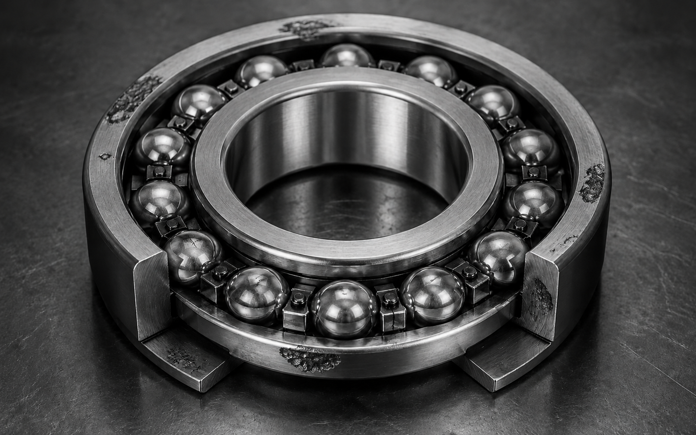
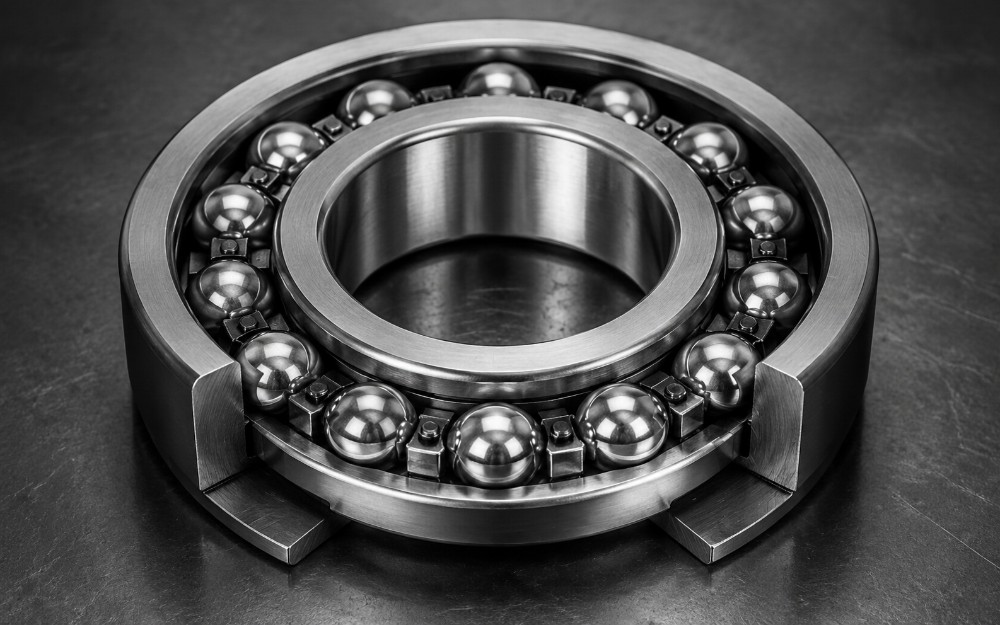

RCA LAB
ESTUDO DE CONDIÇÃO
/ ANTES & DEPOIS
Split
1
Fade
2
Lado a Lado
3
Diff
4
Horizontal
Inverter
Cor Real
?
Caso 01: Rolamento com Falha por Fadiga e Pitting
Arraste o divisor para correlacionar o estágio de desgaste com a condição nominal saudável.


NOMINAL (DEPOIS)
FALHA (ANTES)
‹
›
+
1x
−
🖐️
Atalhos de Teclado
✕ Fechar
Modos de Exibição
1
2
3
4
Mover Divisor
←
→
/
↑
↓
Extremos (0% / 100%)
Home
/
End
Orientação (H/V)
H
ou
V
Inverter Ordem
I
Filtros de Imagem
F
Zoom In / Out
+
/
-
Resetar Zoom
0
ou
R